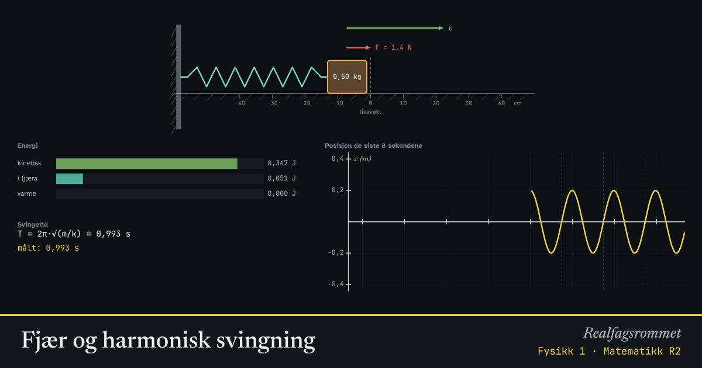

Fjær og harmonisk svingning
En fjær drar tilbake med en kraft som er proporsjonal med hvor mye den er strukket. Det gir en svingning der energien hele tiden går fram og tilbake mellom fjæra og bevegelsen.
Start animasjonen
Formler
Om animasjonen
Hookes lov: Kraften fra fjæra er proporsjonal med utstrekningen og peker mot likevektsstillingen. Fjærkonstanten sier hvor stiv fjæra er.
Fordi kraften alltid peker mot midten, svinger klossen fram og tilbake. Uten friksjon blir bevegelsen en sinuskurve, en harmonisk svingning. Svingetiden avhenger av massen og fjærkonstanten, men ikke av hvor langt du drar den ut.
Energien veksler mellom elastisk potensiell energi i fjæra og kinetisk energi. Med demping blir mekanisk energi gradvis til varme.
Newtons andre lov gir differensiallikningen . Løsningen er med .
Prøv dette
- Mål svingetiden. Stemmer den med formelen?
- Hva skjer med svingetiden når du firedobler massen?
- Dra klossen dobbelt så langt ut. Endres svingetiden? Hva skjer med den største farten?
- Slå på demping. Hvor blir det av energien?
Kompetansemål
- Fysikk 1: Krefter, bevegelse og energi
- Matematikk R2: Radianer, trigonometriske funksjoner og svingninger
- Matematikk R2: Differensiallikninger og retningsdiagram
Mer om integrasjon, rekker og differensiallikninger
- Integralet som grense av summer
- Analysens fundamentalteorem
- Volum av omdreiningslegemer
- Følger og rekker
- Sparing og lån som geometriske rekker
- Differensiallikninger: retningsdiagram og Eulers metode
Mer om energi, varme og svingninger
- Energibevaring: stilling, fart og varme
- Energiomforming og virkningsgrad
- Temperatur og varme: is blir til damp
- Spesifikk varmekapasitet: varmt og kaldt blandes
- Partikkelmodellen og den ideelle gassloven
- Energikvalitet: varmepumpe og panelovn
- Vindkraft: hvor mye energi er det i vinden?
- Strømforsyning: vind, sol, vann og gass